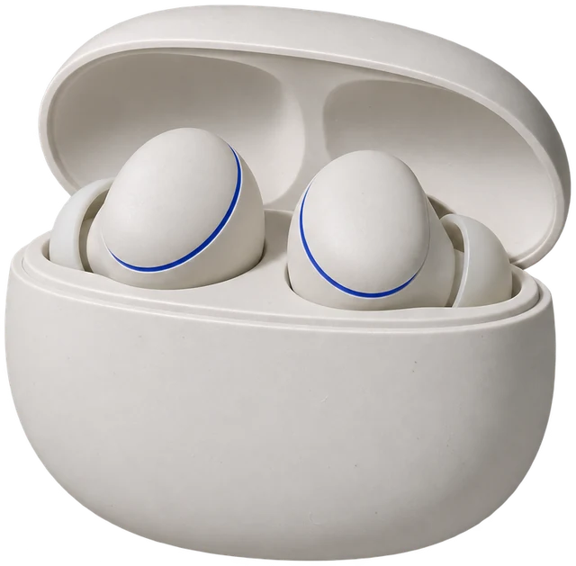
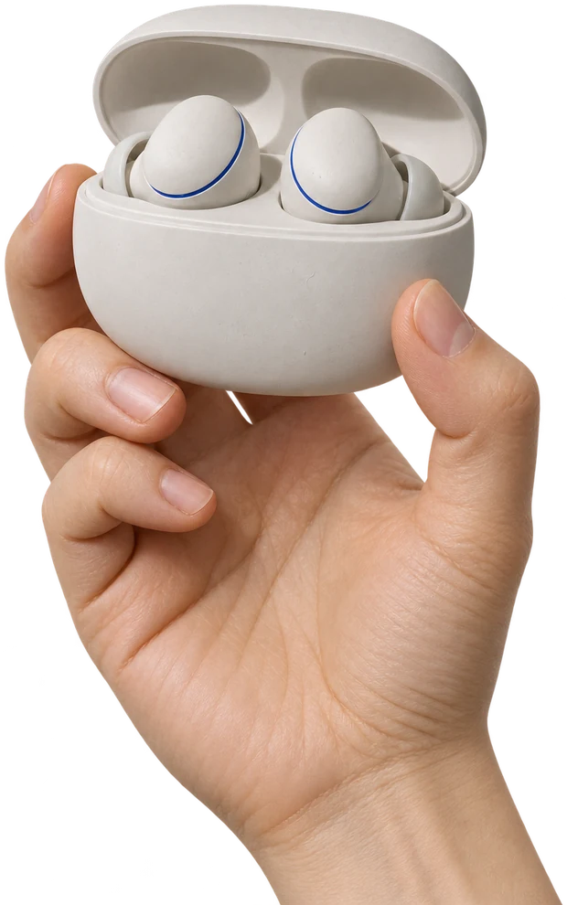
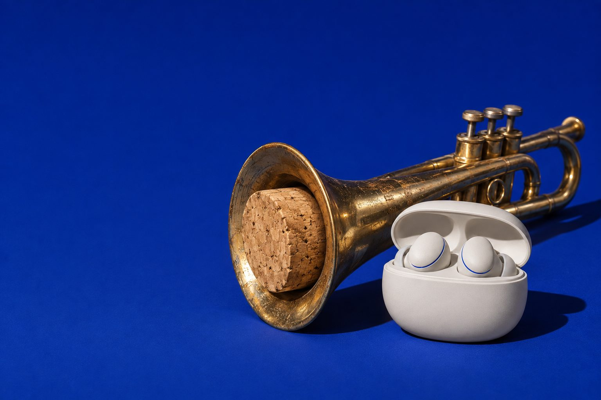
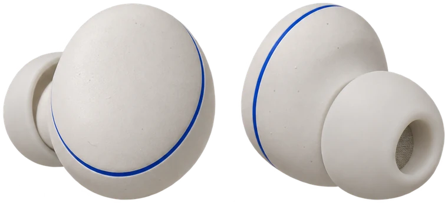
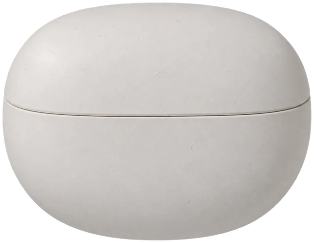
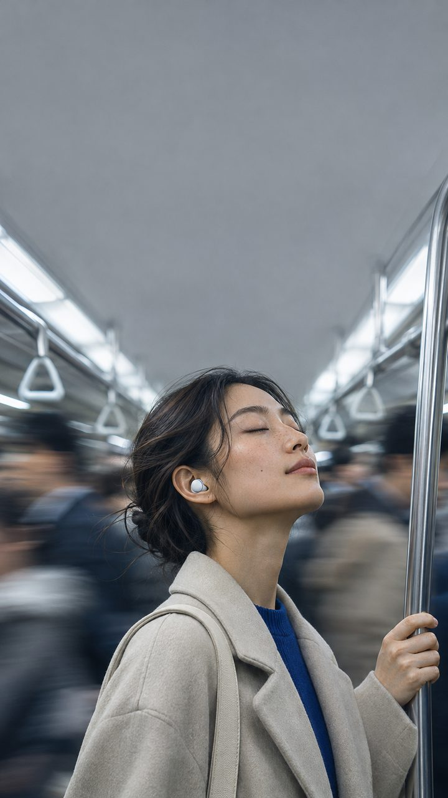

Mute the city.街を、ミュート。

Stadt auf stumm.PEBBLESOUNDStadt auf stumm.

 Commute, minus the noise.
Commute, minus the noise.PEBBLESOUNDSilencia la ciudad.
 도시를 음소거.
도시를 음소거.
Mutethe city.PEBBLESOUND

Quiet fits in a pocket.Mute
the city.
the city.
PEBBLESOUND街を、ミュート。
Rush hour, on silent.Stadt auf stumm.
PEBBLESOUND
Commute, minus the noise. Silencia la ciudad.
Silencia la ciudad.도시를 음소거.
PEBBLESOUNDاكتم ضجيج المدينة.
 Quiet fits in a pocket.Mute the city.街を、ミュート。
Quiet fits in a pocket.Mute the city.街を、ミュート。Stadt auf stumm.
Stadt auf stumm.PEBBLESOUNDCoupe le son de la ville.
PEBBLESOUNDCommute, minus the noise.
Silencia la ciudad.اكتم ضجيج المدينة.Quiet fits in a pocket.Mute the city.
PEBBLESOUND街を、ミュート。

Rush hour,on silent.
PEBBLESOUNDStadt auf stumm.
Coupe le son de la ville.PEBBLESOUNDSilencia la ciudad.
도시를 음소거.اكتم ضجيج المدينة.PEBBLESOUNDMute
the city.
PEBBLESOUND示例广告 · 非真实客户
胜出
03 / 广告投放 · 测试
1
个胜出，40 个版本里测出来的
把预算加到这一张上 · 示例